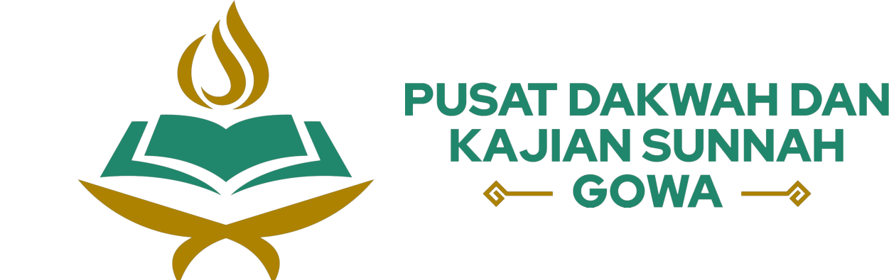
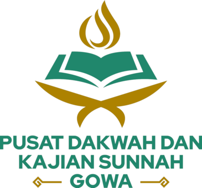
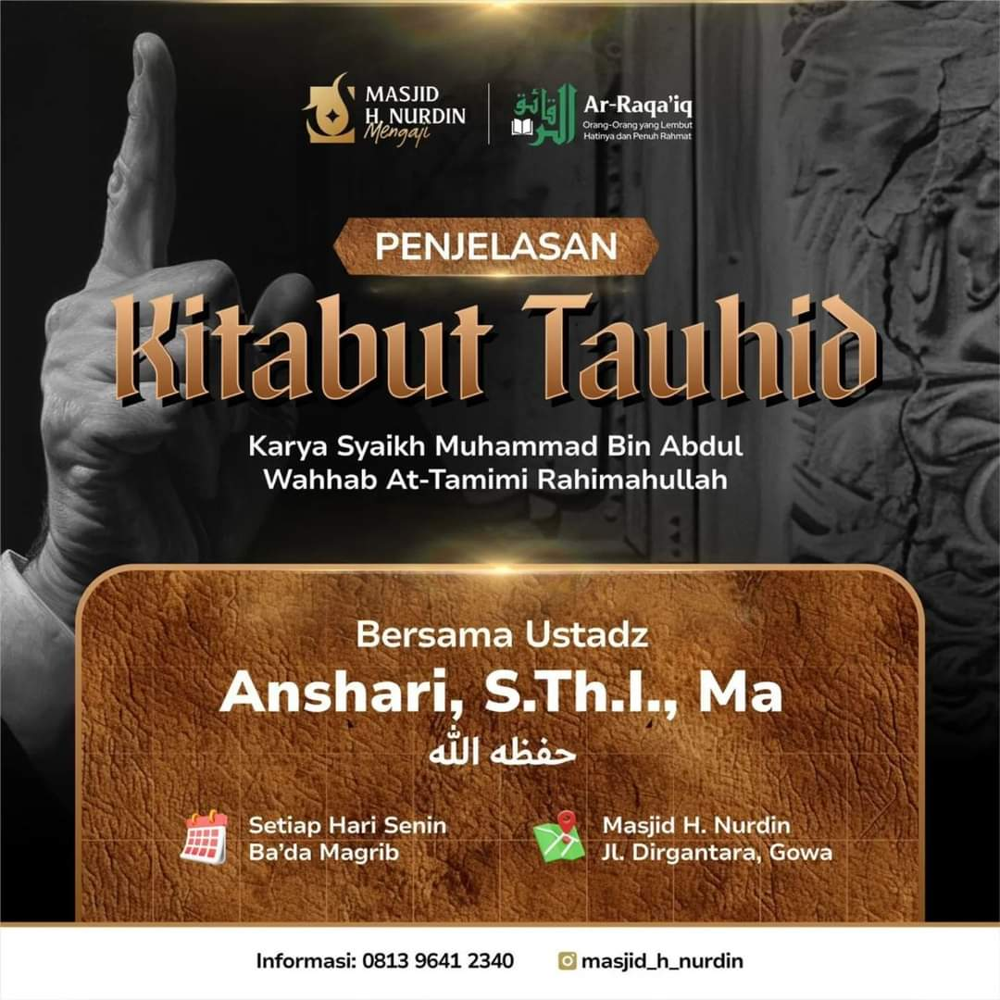
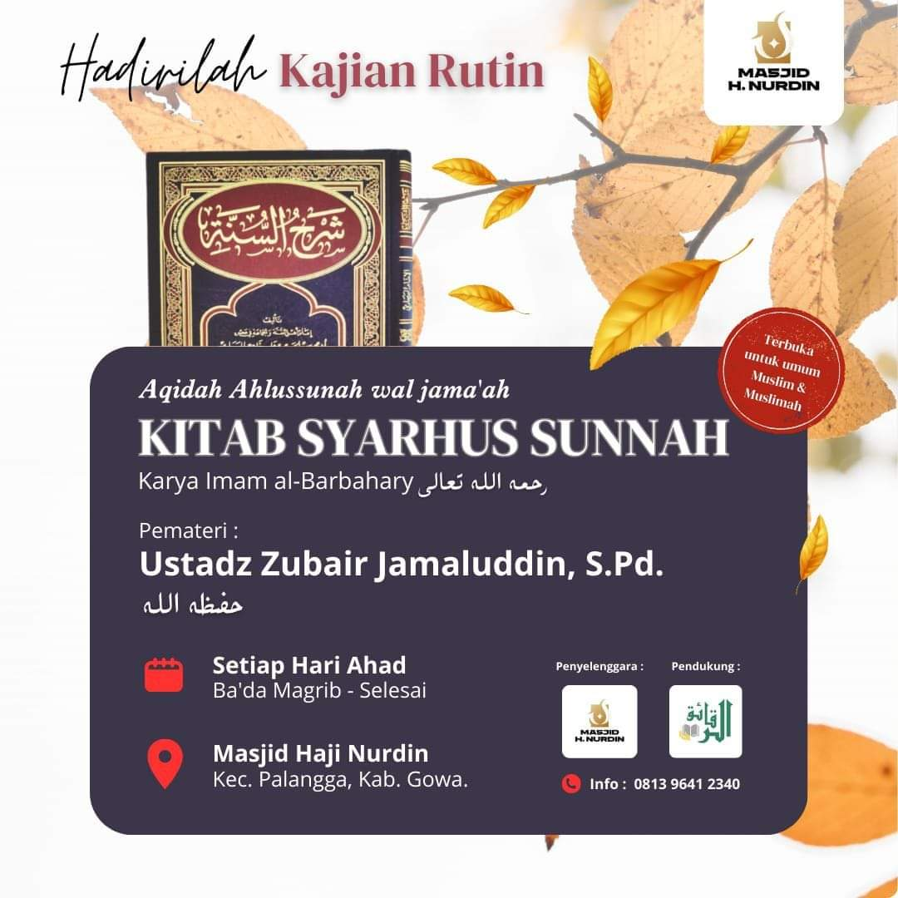
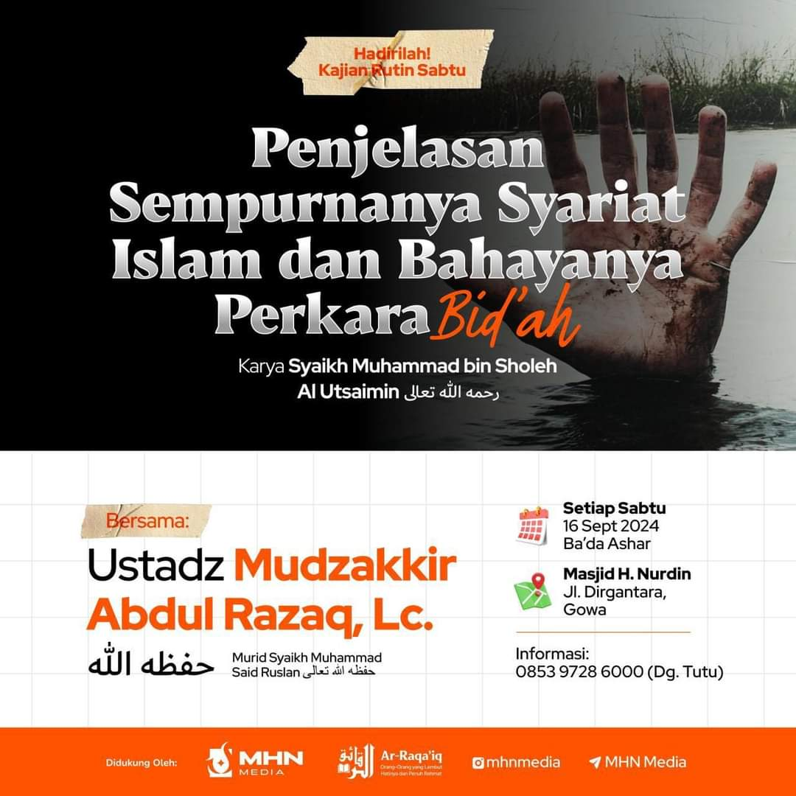

بِسْمِ اللَّهِ الرَّحْمَنِ الرَّحِيم
Ahlan Wa Sahlan di Pusat Dakwah Dan Kajian Sunnah Gowa
Tempat untuk belajar agama susuai Al-Qur'an dan As-Sunnah sesuai pemahaman para salaf.
Menebar Cahaya Ilmu Berdasarkan Al-Qur'an dan As-Sunnah


Tempat untuk belajar agama susuai Al-Qur'an dan As-Sunnah sesuai pemahaman para salaf.
Menebar Cahaya Ilmu Berdasarkan Al-Qur'an dan As-Sunnah



Ingin mendukung penyebaran ilmu agama yang terus berjalan?
Bisa memberikan donasi melalui rekening berikut:
Anda memiliki masalah seputar agama, ataupun yang lainnya?
Silahkan sampaikan pertanyaan Anda di kolom Tanya Ustadz.
Email: kajiansunnahgowa@gmail.com
Telepon: +62 0812-4335-0505
Alamat: Masjid H.Nurdin, Jl. Dirgantara, Tetebatu, Kec. Pallangga, Kabupaten Gowa, Sulawesi Selatan
Pembina: Ustadz Anshari, S.Th.I, MA & Ustadz Anwar, S.Pd.I حفظهما الله